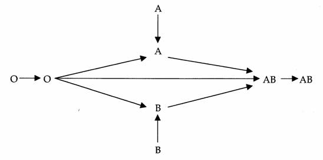
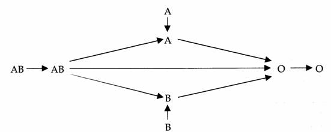

L'acte transfusionnel
La demande d'examen immuno-hematologiqueLa commande de produits sanguins labilesLa transfusion sanguinePre-requis : les groupes sanguinsPre-requis : les produits sanguins labiles
La demande d'examen immuno-hematologique
La prescription medicale
- Identification du patient : nom
de naissance et nom usuel ou marital, prenom, date de naissance, sexe.
- Identification et signature du medecin.
- Date de prescription.
Les examens
- Groupage ABO et RhD. Phenotypage
RH-KELL1.
- Recherche d’Agglutinines Irregulieres
(de moins de 72 heures). Si RAI positive, recherche phenotypage etendu.
Le prelevement
- Verification d’identite soigneuse.
- Etiquettage du tube au lit du patient.
- Regles des 2 determinations : 2
prelevements differents par 2 personnes differentes.
La commande de produits sanguins labiles
Les produits sanguins labiles
- Concentre de globules rouges
deleucocytes.
- Concentre de plaquettes deleucocytes.
- Plasma frais congele.
- Produits autologues.
L’ordonnance de produits sanguins labiles
- Partie administrative :
identification du patient et de l’etablissement soin et son unite.
- Partie medicale :
- Nombre et type de produits sanguins
labiles.
- Qualifications et transformations.
- Date prevue de transfusion.
- Renseignement clinique :
pathologie, resultats biologiques, indication.
- Nom et signature du medecin.
- Bilan immuno-hematologique :
carte de groupe, recherche d’agglutinines irregulieres de moins de 72 heures.
La reception des produits sanguins
labiles
Des
l’arrivee d’un produit sanguin labile, il faut imperativement
verifier :
- Concordance entre le produit commande et
le produit reeu.
- Concordance entre le produit reeu et la
fiche nominative de distribution.
- Concordance entre l’identite du patient
et celle inscrite sur la fiche de distribution.
- Concordance entre le groupe de la poche
et la carte de groupe du patient.
- Le produit : son aspect, son
integrite, la temperature du produit et la date de peremption.
La transfusion sanguine
La preparation
- Les documents indispensables :
- La prescription medicale du produit
sanguin labile.
- La fiche de distribution nominative.
- Le dossier transfusionnel du patient
avec l’immuno-hematologie en cours de validite.
- Le materiel necessaire :
- Le produit sanguin labile e transfuser.
- Le dispositif de transfusion specifique
muni d’un filtre et d’un perforateur.
- Le dispositif de contrele ultime.
- Le patient :
- Le patient est informe sur les modalites
de la transfusion.
- L’etat initial du patient (pouls,
tension arterielle, temperature).
- Une voie veineuse est reservee e la
transfusion du produit sanguin labile.
Le Contrele Pre-transfusionnel
Ultime : CPU
Le
Contrele Pre-transfusionnel Ultime est le dernier contrele de securite
avant l’administration du concentre de globules rouges, pour la prevention
des accidents par incompatibilite ABO.
C’est la realisation d’une reaction de Beth-Vincent sur le sang du
malade et sur les globules rouges de la poche. L’objectif est de
verifier, immediatement avant la transfusion, la concordance des
reactions d’agglutination du sang du patient et du sang de la poche.
Il
comporte 2 etapes :
- Nouvelle
verification attentive des documents :
- Verification de l’identite du receveur
decline par lui-meme et sa concordance les documents nominatifs.
- Concordance du groupe sanguin mentionne
sur le document de groupage, la fiche de distribution et l’etiquette du
produit.
- Concordance des donnees d’identification
du produit portees sur l’etiquette et sur la fiche de distribution
(type de produit, numero d’identification e 11 chiffres).
- Date de peremption du produit.
- Conformite des regles transfusionnelles
specifique au patient.
- Procedure
de CPU :
- Identifier le carton
pre-transfusionnel : nom, prenom, date de naissance.
- Coller ou noter le numero du produit e
tester.
- Indiquer le nom de la personne
effectuant le contrele, la date, l’heure.
- Deposer une goutte de sang du patient
dans la case "receveur".
- Deposer une goutte de sang de la poche
dans la case "donneur".
- Deposer une goutte de serum
physiologique sur chaque case de reactif : anti-A, anti-B (Anticorps anti-A, Anticorps anti-B).
- A l’aide d’un tige e bout rond et lisse, prelever
une petite goutte de sang dans la case "receveur", la transferer et
melanger dans les cases anti-A et anti-B.
- Repeter la meme operation pour la poche
transfuser : case "donneur".
- Interpreter les reactions
d’agglutination.
Epreuve de Beth-vincent
L’epreuve
de Beth-Vincent permet l’identification des antigenes
globulaires en mettant en contact les globules rouges e tester et les
anticorps connus (anti-A, anti-B, anti-A+B).
| Epreuve de
Beth-vincent |
| |
Anti-A |
Anti-B |
Anti A+B |
| A |
+ |
- |
+ |
| B |
- |
+ |
+ |
| O |
- |
- |
- |
| AB |
+ |
+ |
+ |
(+) = presence d’agglutination
Regle de compatibilite ABO
Transfusion sanguine

Transfusion de plasma

Mise en route de la transfusion
- Transfuser les premiers millilitres tres
lentement (20 e 30 gouttes/minutes), puis regler le debit.
- Duree totale de la
transfusion :
- Globules rouges en 1h30.
- Plaquettes en 30 min.
- Plasma en 10 min.

 haut
de page
haut
de page